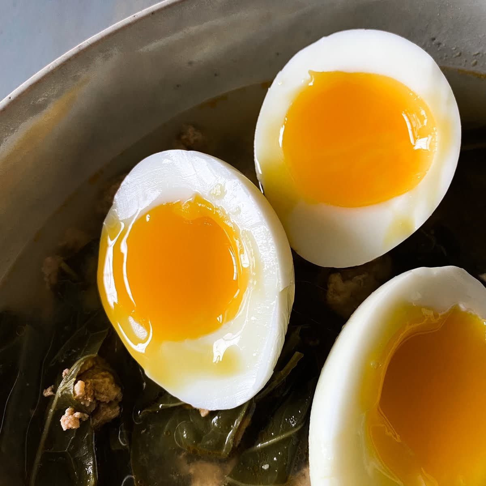

Home
Soft-Boiled Egg Recipe

Description
I'm allergic to raw egg yolk but I eat this anyway because I love it.
Ingredients
Steps
- Heat water in a pot, with the water just high enough to completely cover the egg, until it comes to a boil.
- Use a slotted spoon to gently place the egg in the water.
- Cook for 6 minutes, and then remove.
- Peel away and nom!